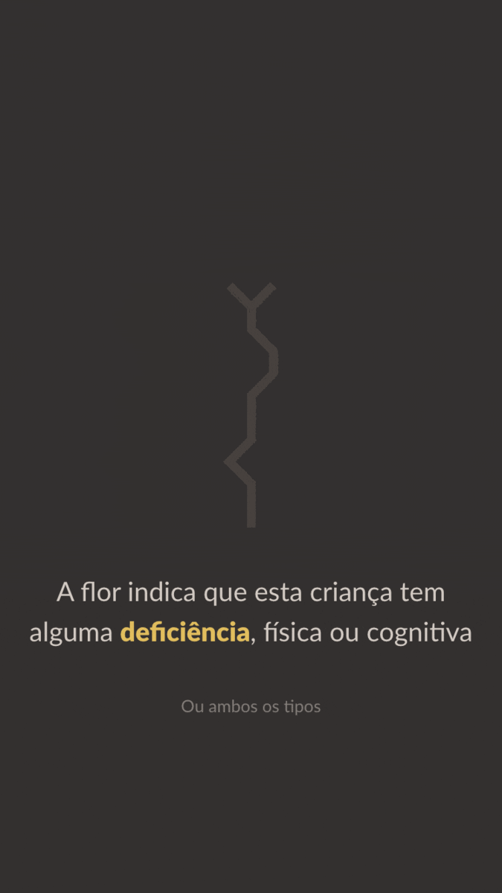

Desktop and mobile version of an interactive chart that represents
children as tiny plants, that grow as time passes – while they
wait for a new parent to adopt them. These plants are also grouped
by categories such as ethnicity, siblings and disabilities.
Simulation shows which children are adopted (and which are not) in
Brazil
Among children living at a temporary home, you could probably find a
14-year-old black boy who has a brother or sister. These are the most
common attributes of children available for adoption.
However, the profile most sought out by future parents is that of a
2-year-old white girl and only child.
According to our simulation, the 14-year-old’s chance of being adopted
within 12 months is 1 in 1,000. The girl’s adoption
is taken for granted.
In search for a more sensitive approach, we opted for a visual
metaphor and represented each child as a small plant üåª that grows as
the years go by.

The higher the plant, the older the child. The V-shaped ending means
that the child has at least one brother or sister. The
flower indicates that this child has a physical or
cognitive disability.
When this story was published, the link between prospective parents
and children available for adoption was manually performed by judges –
through their own spreadsheets, for example.
But a new tool was on the horizon. It would match parents and children
using an integrated national system.
Inspired by this new system, I developed an
open source
simulator of our own, which also matches prospective parents and
children.
This simulator lets you interactively track
how long it would take for a 2-year-old to be adopted
– and compare it with the waiting time of a 10-year-old.
Users probably ran this simulation once. We have performed it
thousands of times.
By doing so, it was possible to identify the attributes that most
facilitate or hinder the adoption of a child. Being over 5 years old,
having siblings or some kind of disability makes adoption extremely
difficult.
After running the simulation up until a total of 1,000 children were
adopted, we grouped them by different categories: race, disability
and siblings.
We then compared the characteristics of children available for
adoption with those of children who were adopted. This indicates that,
although skin color plays an important role during selection, there
are other more selective filters in action.
For example, almost half of the children with cognitive impairments
are not adopted. In addition, children that have brothers or sisters
are much less likely to be adopted if they are over 10.
Outcomes
Before talking about some actual results, let’s take a look at the
situation we were in.
The charts below represent the prospective parents preferences around
August 2019, at the time when the article was being created.
It seems harsh to me that only 1% of parents accept children over
10.
When a couple or a single person is able to apply for the adoption
process, it is necessary for them to define the attributes of the
desired child. These decisions involve maximum age, sex, race and
many others.
Just to name a couple of discrepancies:
White kids are accepted by 92% of the prospects, but only 56% of them
accept black boys and girls. Also, children that have at least one
brother or sister are only accepted by 37% of the prospective parents.
These numbers don’t add up when you compare them with the Brazilian
population, from babies to teenagers.
To address this kind of problem, a Brazilian senator spoke up the at
the national Upper House.
The adoption of older kids
was promoted
by Kátia Abreu only two days after this article was published – and
the newspaper’s name was mentioned during her speech.
She was announcing the creation of a local branch for the National
Association of Adoption Support Groups, at the state that she
represents.
But it’s not all about official repercussion. The quotes below were
extracted from tweets that shared the online article – and I feel like
the comments they wrote really made all the months spent on this
project worth it.
Reading about adoption, watching the simulator they developed and
crying inside an Uber. I really want to be a stable adult to be the
mother of these kids
Besides publishing a delicate visual story about adoption, our
underlying goal was to promote a shift in perception, so that those
charts and numbers could look – a few years from now – a bit
different.
Fun fact: the team and I had this idea while sorting random verbs,
nouns and adjectives during an outdoor ideation workshop that we
organized ourselves.
You can read more about it on
our interview
for the Kantar Information is Beautiful Awards.
Stage & trophies photographed during the ceremony for the KANTAR
Information is Beautiful Awards 2019, at the London Symphony
Orchestra’s St. Luke’s, an 18th century church turned cathedral of
the arts.
After this data visualization won the trophy as the
Best Non-English
project of 2019, the folks responsible for Information is Beautiful
asked us to present a behind-the-scenes look at our story. Feel free
to
read the interview.